Last updated: 2026-05-28
Checks: 7 0
Knit directory: BIO334_Robinson/
This reproducible R Markdown analysis was created with workflowr (version 1.7.2). The Checks tab describes the reproducibility checks that were applied when the results were created. The Past versions tab lists the development history.
Great! Since the R Markdown file has been committed to the Git repository, you know the exact version of the code that produced these results.
Great job! The global environment was empty. Objects defined in the global environment can affect the analysis in your R Markdown file in unknown ways. For reproduciblity it’s best to always run the code in an empty environment.
The command set.seed(20260522) was run prior to running
the code in the R Markdown file. Setting a seed ensures that any results
that rely on randomness, e.g. subsampling or permutations, are
reproducible.
Great job! Recording the operating system, R version, and package versions is critical for reproducibility.
Nice! There were no cached chunks for this analysis, so you can be confident that you successfully produced the results during this run.
Great job! Using relative paths to the files within your workflowr project makes it easier to run your code on other machines.
Great! You are using Git for version control. Tracking code development and connecting the code version to the results is critical for reproducibility.
The results in this page were generated with repository version 1630cfc. See the Past versions tab to see a history of the changes made to the R Markdown and HTML files.
Note that you need to be careful to ensure that all relevant files for
the analysis have been committed to Git prior to generating the results
(you can use wflow_publish or
wflow_git_commit). workflowr only checks the R Markdown
file, but you know if there are other scripts or data files that it
depends on. Below is the status of the Git repository when the results
were generated:
Ignored files:
Ignored: .DS_Store
Ignored: .RData
Ignored: .Rhistory
Ignored: .Rproj.user/
Ignored: analysis/.DS_Store
Ignored: analysis/.Rapp.history
Ignored: data/.DS_Store
Untracked files:
Untracked: airway_subset.rdata
Untracked: analysis/human_protein_lengths.txt
Untracked: exercise4_single_cell.html
Untracked: exercise5_spatial.html
Untracked: output/human_protein_lengths.txt
Unstaged changes:
Modified: .Rprofile
Modified: BIO334_Robinson.Rproj
Note that any generated files, e.g. HTML, png, CSS, etc., are not included in this status report because it is ok for generated content to have uncommitted changes.
These are the previous versions of the repository in which changes were
made to the R Markdown
(analysis/khaznadar_james_exercise5.Rmd) and HTML
(docs/khaznadar_james_exercise5.html) files. If you’ve
configured a remote Git repository (see ?wflow_git_remote),
click on the hyperlinks in the table below to view the files as they
were in that past version.
| File | Version | Author | Date | Message |
|---|---|---|---|---|
| Rmd | 1630cfc | jkhazn | 2026-05-28 | complete exercise 5 |
Full rendered version with plots: https://jkhazn.github.io/BIO334_Robinson/khaznadar_james_exercise5.html
spe <- Visium_humanDLPFC()see ?STexampleData and browseVignettes('STexampleData') for documentationloading from cachespeclass: SpatialExperiment
dim: 33538 4992
metadata(0):
assays(1): counts
rownames(33538): ENSG00000243485 ENSG00000237613 ... ENSG00000277475
ENSG00000268674
rowData names(3): gene_id gene_name feature_type
colnames(4992): AAACAACGAATAGTTC-1 AAACAAGTATCTCCCA-1 ...
TTGTTTGTATTACACG-1 TTGTTTGTGTAAATTC-1
colData names(8): barcode_id sample_id ... reference cell_count
reducedDimNames(0):
mainExpName: NULL
altExpNames(0):
spatialCoords names(2) : pxl_col_in_fullres pxl_row_in_fullres
imgData names(4): sample_id image_id data scaleFactorHow many genes and spots? How many genes have non-zero expression? How many spots are in tissue? Show distribution of cells per spot. Plot ground truth spatial domains.
There are 33538 genes and 4992 spots.
dim(spe)[1] 33538 4992sum(rowSums(counts(spe)) > 0)[1] 22062Of the 4992 spots, 3639 are in tissue.
table(spe$in_tissue)
0 1
1353 3639 hist(spe$cell_count, breaks = 10)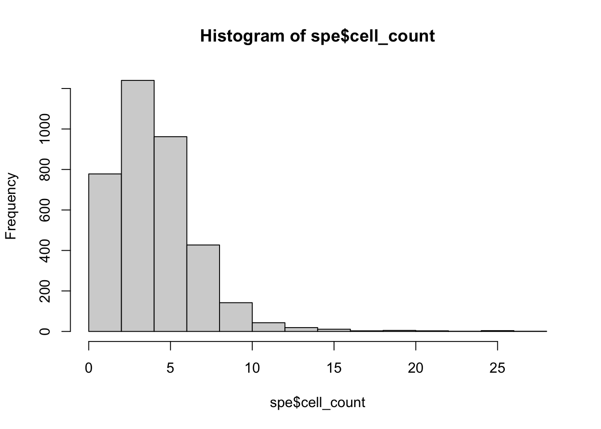
ggplot(data.frame(cell_count = spe$cell_count), aes(x = cell_count)) +
geom_density() +
xlab('Count') +
ylab('Frequency')Warning: Removed 1353 rows containing non-finite outside the scale range
(`stat_density()`).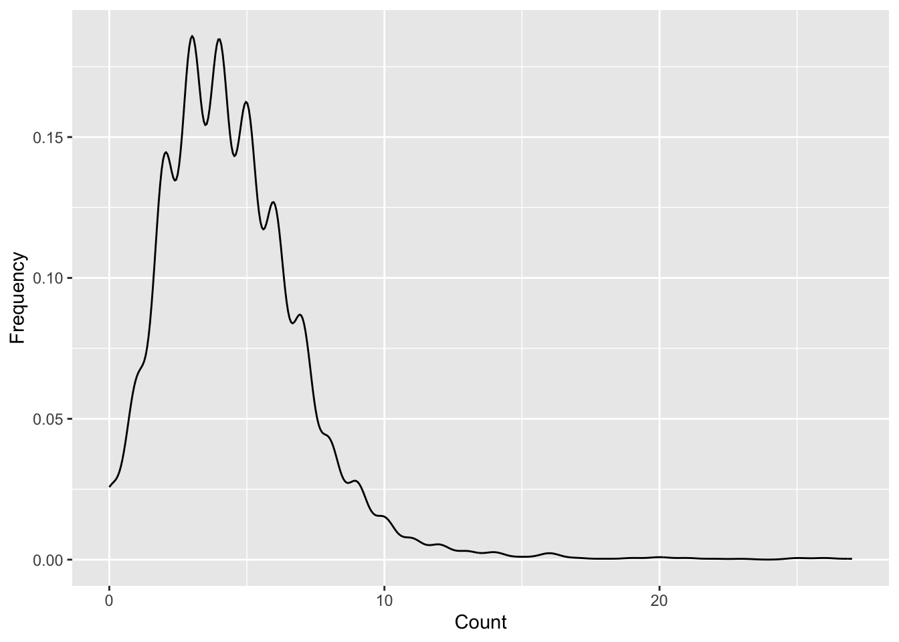
data.frame(colData(spe), spatialCoords(spe)) |>
ggplot(aes(x = pxl_col_in_fullres, y = pxl_row_in_fullres, color = ground_truth)) +
geom_point() +
coord_equal() +
scale_y_reverse() +
scale_color_discrete(na.value = "white") +
theme_void()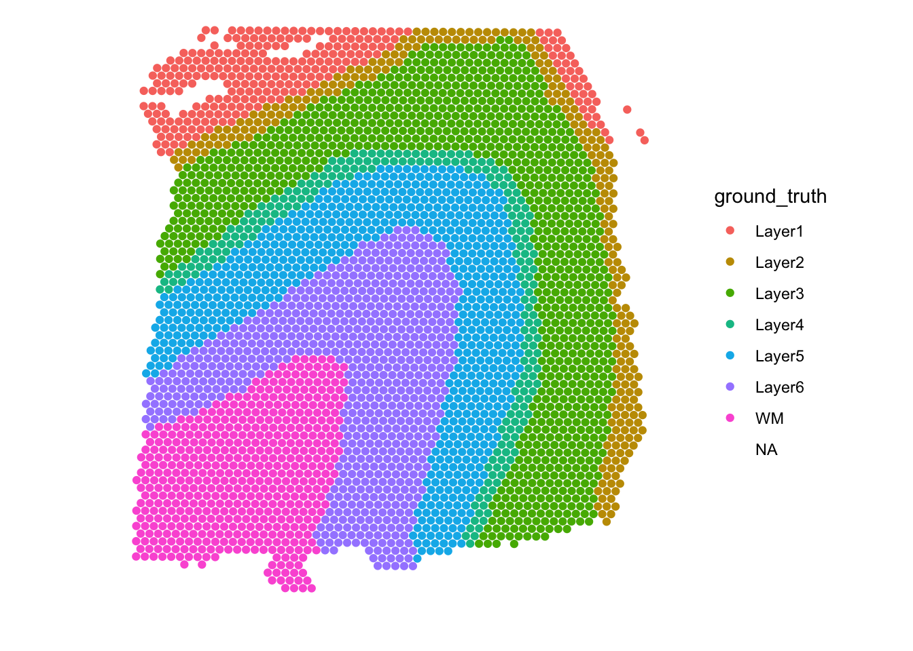
Explore QC metrics and apply reasonable filters.
spe <- spe[, spe$in_tissue == 1]
is_mito <- grepl("(^MT-)|(^mt-)", rowData(spe)$gene_name)
table(is_mito)is_mito
FALSE TRUE
33525 13 spe <- quickRnaQc.se(spe, subsets = list(MT = is_mito))using unknown matrix fallback for 'dgTMatrix'plotColData(spe, x = "detected", y = "subset.proportion.MT",
colour_by = "keep") + scale_x_sqrt()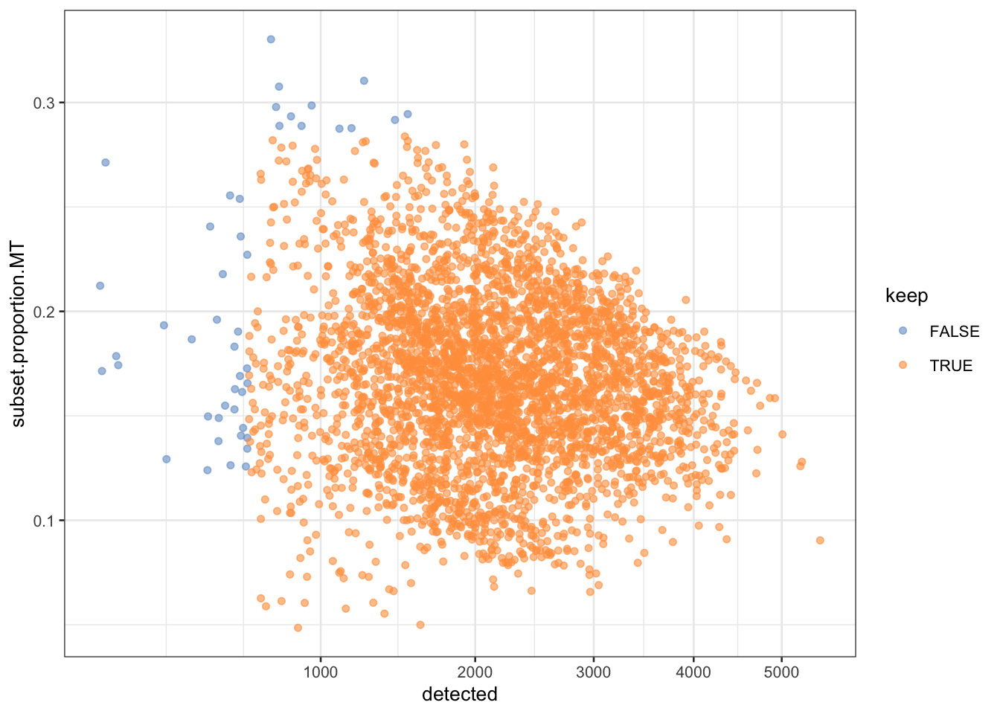
data.frame(colData(spe), spatialCoords(spe)) |>
ggplot(aes(x = pxl_col_in_fullres, y = pxl_row_in_fullres, color = keep)) +
geom_point() +
coord_equal() +
scale_y_reverse() +
theme_void()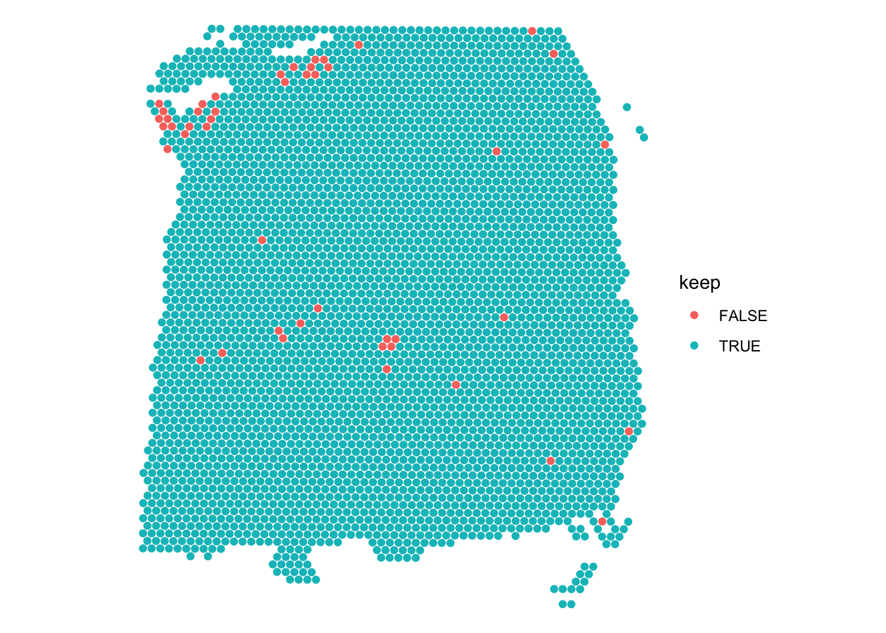
spe <- spe[, colData(spe)$keep]
spe <- spe[rowSums(counts(spe)) > 0, ]
dim(spe)[1] 21833 3593Normalize, find HVGs, PCA. What layers of DLPFC are transcriptionally distinct?
spe <- normalizeRnaCounts.se(spe)using unknown matrix fallback for 'dgTMatrix'spe <- chooseRnaHvgs.se(spe, top = 2000)using unknown matrix fallback for 'dgTMatrix'plot(rowData(spe)$means, rowData(spe)$variances, col=factor(rowData(spe)$hvg))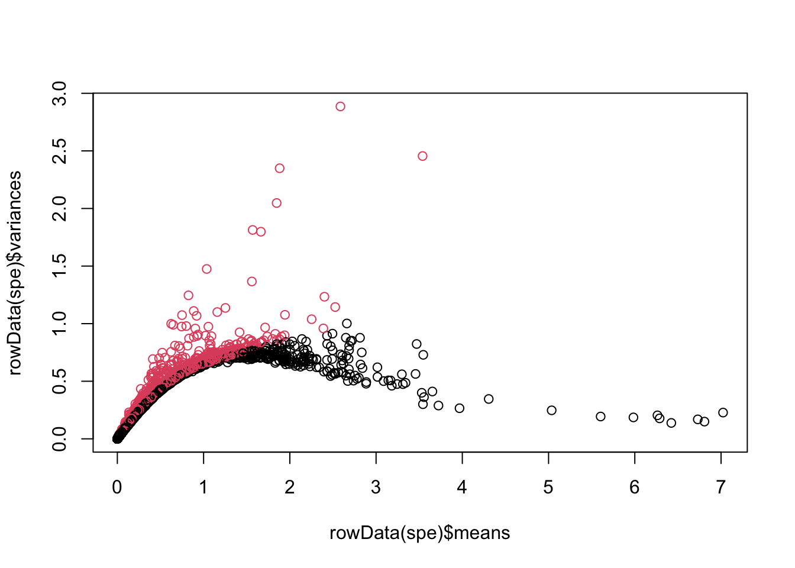
is.hvg <- rowData(spe)$hvg
# Get the gene names:
hvg.names <- rownames(spe)[is.hvg]
length(hvg.names)[1] 2000Plot the first, second and third PC in spatial context.
spe <- runPCA(spe, subset_row = hvg.names, ncomponents = 50)using unknown matrix fallback for 'dgTMatrix'df <- data.frame(colData(spe), reducedDim(spe, "PCA"), spatialCoords(spe))
#rename the colnames of the dataframe
colnames(df) <- gsub("^X(\\d+)$", "PC\\1", colnames(df))
df |>
dplyr::select(c(PC1:PC3, pxl_col_in_fullres, pxl_row_in_fullres)) |>
pivot_longer(PC1:PC3) |>
ggplot(aes(x = pxl_col_in_fullres, y = pxl_row_in_fullres, color = value)) +
geom_point(size = 0.5) +
facet_wrap( ~ name) +
coord_equal() + # to make x and y coordinates have the same spacing
scale_color_gradientn(colors = pals::parula()) + # custom color scale
scale_y_reverse() +
theme_void()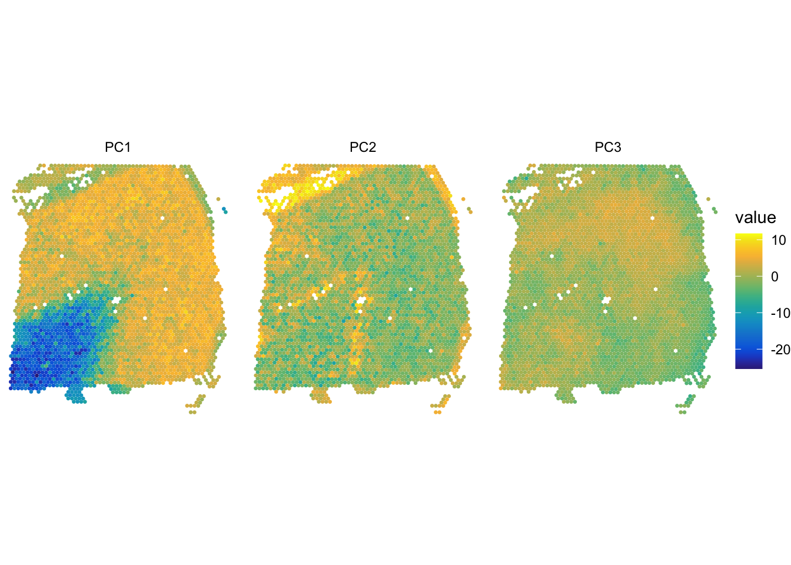
Use Banksy for spatially-aware dimension reduction. Does it improve things? Slightly, the white matter is now clearly clustered together, with there being some other higher level structures visible which is closer to the groud truth.
set.seed(123)
# select number of neighbors for the shared nearest-neighbor graph
num.neighbors <- 15
# run the graph clustering
spe <- clusterGraph.se(spe, num.neighbors=num.neighbors)
data.frame(colData(spe), spatialCoords(spe)) |>
ggplot(aes(x = pxl_col_in_fullres, y = pxl_row_in_fullres, color = clusters)) +
geom_point() +
coord_equal() + # to make x and y coordinates have the same spacing
theme_void() +
scale_color_manual(values = pals::brewer.set1(length(unique(spe$clusters)))) +
scale_y_reverse()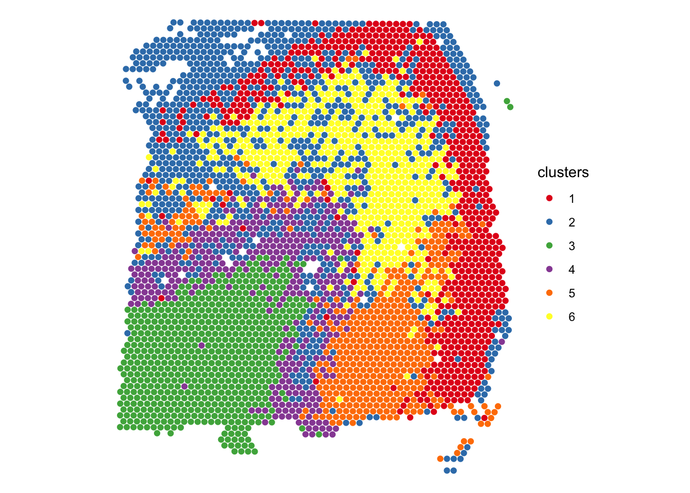
Apply spatially-aware clustering, compare to ground truth with ARI, plot side by side.
set.seed(123)
spe <- computeBanksy(spe, assay_name = "logcounts")Computing neighbors...Spatial mode is kNN_medianParameters: k_geom=15Done
Donespe <- runBanksyPCA(spe)
spe <- clusterBanksy(spe)
data.frame(colData(spe), spatialCoords(spe)) |>
ggplot(aes(x = pxl_col_in_fullres, y = pxl_row_in_fullres, color = clust_M0_lam0.2_k50_res1)) +
geom_point() +
coord_equal() +
theme_void() +
scale_color_manual(values = pals::brewer.set2(length(unique(spe$clust_M0_lam0.2_k50_res1)))) +
scale_y_reverse()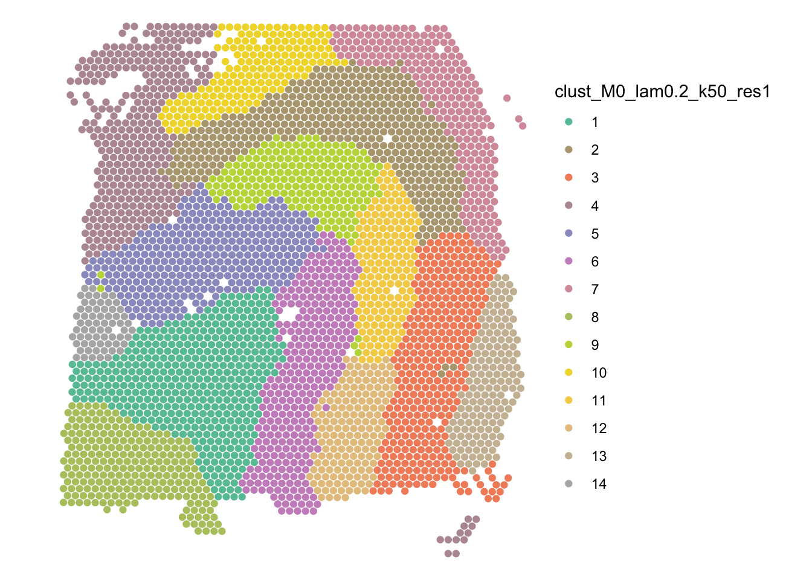
library(mclust)Package 'mclust' version 6.1.2
Type 'citation("mclust")' for citing this R package in publications.
Attaching package: 'mclust'The following object is masked from 'package:dplyr':
countThe following object is masked from 'package:matrixStats':
countidx <- !is.na(spe$ground_truth)
adjustedRandIndex(spe$ground_truth[idx], spe$clust_M0_lam0.2_k50_res1[idx])[1] 0.3088932data.frame(colData(spe), spatialCoords(spe)) |>
ggplot(aes(x = pxl_col_in_fullres, y = pxl_row_in_fullres, color = ground_truth)) +
geom_point() +
coord_equal() +
scale_y_reverse() +
scale_color_discrete(na.value = "grey80") +
theme_void() +
ggtitle("Ground truth")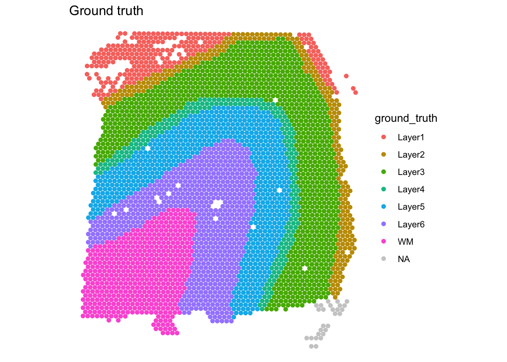
data.frame(colData(spe), spatialCoords(spe)) |>
ggplot(aes(x = pxl_col_in_fullres, y = pxl_row_in_fullres, color = clust_M0_lam0.2_k50_res1)) +
geom_point() +
coord_equal() +
scale_y_reverse() +
theme_void() +
scale_color_manual(values = pals::brewer.set2(length(unique(spe$clust_M0_lam0.2_k50_res1)))) +
ggtitle("Banksy clusters")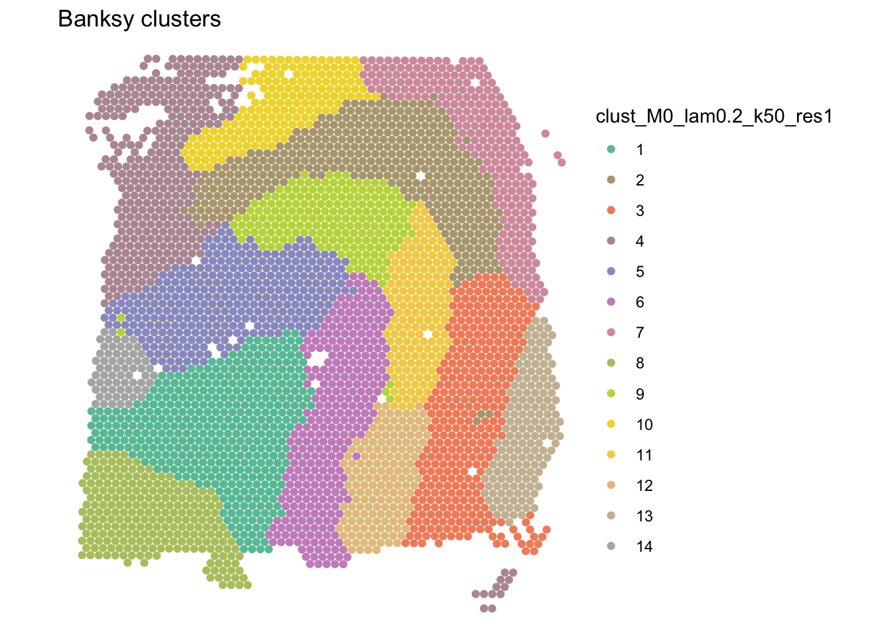
Compute Moran’s I for the 3 genes from the paper + 200 random HVGs. Plot and highlight the 3 genes.
paper_genes <- c("MOBP", "PCP4", "SNAP25")
paper_ids <- rownames(spe)[rowData(spe)$gene_name %in% paper_genes]
set.seed(123)
test_genes <- union(paper_ids, sample(hvg.names, 200))
sfe <- toSpatialFeatureExperiment(spe)
colGraph(sfe, "visium") <- findVisiumGraph(sfe, zero.policy = TRUE)
sfe <- runUnivariate(sfe, type = "moran", features = test_genes,
colGraphName = "visium", zero.policy = TRUE)
plotSpatialFeature(sfe, paper_ids, ncol = 3, maxcell = 5e4, swap_rownames = "gene_name")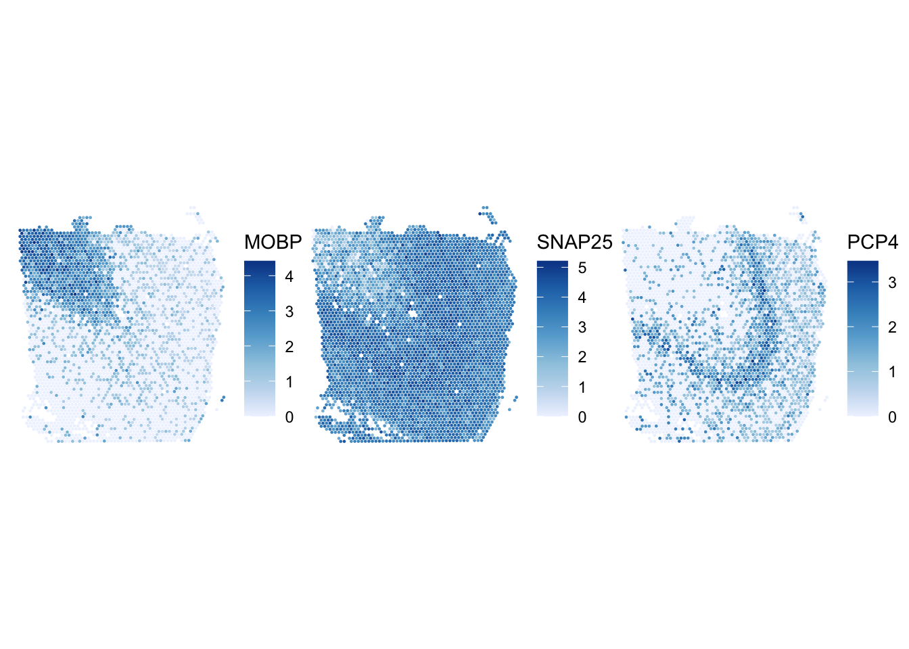
sessionInfo()R version 4.6.0 (2026-04-24)
Platform: aarch64-apple-darwin23
Running under: macOS Tahoe 26.5
Matrix products: default
BLAS: /Library/Frameworks/R.framework/Versions/4.6/Resources/lib/libRblas.0.dylib
LAPACK: /Library/Frameworks/R.framework/Versions/4.6/Resources/lib/libRlapack.dylib; LAPACK version 3.12.1
locale:
[1] en_US.UTF-8/en_US.UTF-8/en_US.UTF-8/C/en_US.UTF-8/en_US.UTF-8
time zone: Europe/Zurich
tzcode source: internal
attached base packages:
[1] stats4 stats graphics grDevices utils datasets methods
[8] base
other attached packages:
[1] mclust_6.1.2 scran_1.40.0
[3] pals_1.10 tidyr_1.3.2
[5] Banksy_1.8.1 BayesSpace_1.22.0
[7] scater_1.40.1 scuttle_1.22.0
[9] scrapper_1.6.3 Voyager_1.14.0
[11] SpatialFeatureExperiment_1.14.0 dplyr_1.2.1
[13] ggplot2_4.0.3 STexampleData_1.20.0
[15] ExperimentHub_3.2.0 AnnotationHub_4.2.0
[17] BiocFileCache_3.2.0 dbplyr_2.5.2
[19] SpatialExperiment_1.22.0 SingleCellExperiment_1.34.0
[21] SummarizedExperiment_1.42.0 Biobase_2.72.0
[23] GenomicRanges_1.64.0 Seqinfo_1.2.0
[25] IRanges_2.46.0 S4Vectors_0.50.1
[27] BiocGenerics_0.58.1 generics_0.1.4
[29] MatrixGenerics_1.24.0 matrixStats_1.5.0
[31] workflowr_1.7.2
loaded via a namespace (and not attached):
[1] fs_2.1.0 spatialreg_1.4-3
[3] bitops_1.0-9 sf_1.1-1
[5] EBImage_4.54.0 httr_1.4.8
[7] RColorBrewer_1.1-3 tools_4.6.0
[9] backports_1.5.1 R6_2.6.1
[11] DirichletReg_0.7-2 HDF5Array_1.40.0
[13] uwot_0.2.4 rhdf5filters_1.24.0
[15] withr_3.0.2 sp_2.2-1
[17] gridExtra_2.3 cli_3.6.6
[19] microbenchmark_1.5.0 sandwich_3.1-1
[21] labeling_0.4.3 marginaleffects_0.32.0
[23] sass_0.4.10 mvtnorm_1.3-7
[25] arrow_24.0.0 S7_0.2.2
[27] proxy_0.4-29 dbscan_1.2.4
[29] R.utils_2.13.0 aricode_1.1.0
[31] dichromat_2.0-0.1 scico_1.5.0
[33] maps_3.4.3 limma_3.68.3
[35] rstudioapi_0.18.0 RSQLite_3.53.1
[37] spdep_1.4-2 Matrix_1.7-5
[39] ggbeeswarm_0.7.3 abind_1.4-8
[41] R.methodsS3_1.8.2 terra_1.9-27
[43] lifecycle_1.0.5 whisker_0.4.1
[45] multcomp_1.4-30 yaml_2.3.12
[47] edgeR_4.10.1 rhdf5_2.56.0
[49] SparseArray_1.12.2 grid_4.6.0
[51] blob_1.3.0 promises_1.5.0
[53] dqrng_0.4.1 crayon_1.5.3
[55] lattice_0.22-9 beachmat_2.28.0
[57] mapproj_1.2.12 KEGGREST_1.52.0
[59] magick_2.9.1 metapod_1.20.0
[61] zeallot_0.2.0 pillar_1.11.1
[63] knitr_1.51 rjson_0.2.23
[65] boot_1.3-32 xgboost_3.2.1.1
[67] codetools_0.2-20 wk_0.9.5
[69] glue_1.8.1 getPass_0.2-4
[71] data.table_1.18.4 memuse_4.2-3
[73] vctrs_0.7.3 png_0.1-9
[75] gtable_0.3.6 assertthat_0.2.1
[77] cachem_1.1.0 xfun_0.57
[79] S4Arrays_1.12.0 DropletUtils_1.32.0
[81] coda_0.19-4.1 survival_3.8-6
[83] RcppHungarian_0.3 sfheaders_0.4.5
[85] maxLik_1.5-2.2 units_1.0-1
[87] statmod_1.5.2 bluster_1.22.0
[89] TH.data_1.1-5 nlme_3.1-169
[91] bit64_4.8.2 filelock_1.0.3
[93] rprojroot_2.1.1 bslib_0.11.0
[95] irlba_2.3.7 vipor_0.4.7
[97] KernSmooth_2.23-26 otel_0.2.0
[99] colorspace_2.1-2 spData_2.3.5
[101] DBI_1.3.0 tidyselect_1.2.1
[103] processx_3.9.0 bit_4.6.0
[105] compiler_4.6.0 curl_7.1.0
[107] git2r_0.36.2 httr2_1.2.2
[109] BiocNeighbors_2.6.0 h5mread_1.4.0
[111] DelayedArray_0.38.1 scales_1.4.0
[113] classInt_0.4-11 callr_3.7.6
[115] rappdirs_0.3.4 tiff_0.1-12
[117] stringr_1.6.0 digest_0.6.39
[119] fftwtools_0.9-11 rmarkdown_2.31
[121] XVector_0.52.0 htmltools_0.5.9
[123] pkgconfig_2.0.3 jpeg_0.1-11
[125] sparseMatrixStats_1.24.0 fastmap_1.2.0
[127] rlang_1.2.0 htmlwidgets_1.6.4
[129] DelayedMatrixStats_1.34.0 farver_2.1.2
[131] jquerylib_0.1.4 zoo_1.8-15
[133] jsonlite_2.0.0 BiocParallel_1.46.0
[135] R.oo_1.27.1 BiocSingular_1.28.0
[137] RCurl_1.98-1.18 magrittr_2.0.5
[139] Formula_1.2-5 s2_1.1.9
[141] patchwork_1.3.2 Rhdf5lib_2.0.0
[143] Rcpp_1.1.1-1.1 ggnewscale_0.5.2
[145] viridis_0.6.5 leidenAlg_1.1.7
[147] stringi_1.8.7 MASS_7.3-65
[149] parallel_4.6.0 ggrepel_0.9.8
[151] deldir_2.0-4 sccore_1.0.7
[153] Biostrings_2.80.0 splines_4.6.0
[155] locfit_1.5-9.12 igraph_2.3.1
[157] ScaledMatrix_1.20.0 LearnBayes_2.15.2
[159] BiocVersion_3.23.1 evaluate_1.0.5
[161] BiocManager_1.30.27 httpuv_1.6.17
[163] miscTools_0.6-30 purrr_1.2.2
[165] rsvd_1.0.5 e1071_1.7-17
[167] RSpectra_0.16-2 later_1.4.8
[169] viridisLite_0.4.3 class_7.3-23
[171] tibble_3.3.1 memoise_2.0.1
[173] beeswarm_0.4.0 AnnotationDbi_1.74.0
[175] cluster_2.1.8.2